本文是学习angr_ctf 所写。这里是我的一点总结和想法。
安装angr 我安装的环境是ubuntu20.04+python3。首先安装python,确保python默认为python3而不是python2。这个问题在ubuntu20.04上面有体现。如果出现默认python是python2，建议先卸载python2，等python3的虚拟环境安装完成之后再重新安装python2。
1 2 3 4 5 sudo apt-get update sudo apt-get autoremove --purge python2* cd /usr/binln -s /usr/bin/python3.8 python
接下来就是安装虚拟环境。
1 2 sudo apt-get install python-dev libffi-dev build-essential pip3 install virtualenvwrapper
设置环境变量
1 2 export WORKON_HOME=$HOME /Python-workhomesource /usr/local /bin/virtualenvwrapper.sh
这里source /usr/local/bin/virtualenvwrapper.sh执行如果报错为没有找到文件，建议找一下自己的virtualenvwrapper安装目录。如果报错为没有模块的话，建议检查一下自己默认python是否为python3。如果这两步执行没有错误的话，建议写入~/.bashrc中，这样就不用每次启动bash都要输入一次。
接下来就是进入虚拟环境安装angr
1 2 3 mkvirtualenv virangr workon pip3 install angr
如此angr就安装上了，可以正常使用了。后续python2安装上也不影响使用。只要保证默认python是python3即可。
angr笔记 本文所有程序全部是需要输入密码，然后判断密码是否正确，不同题目难度各异，依次递增。输入正确回显为”Good Job.”,反之则为”Try again.”
00_angr_find 这个例子就是angr的开端，脚本并不复杂，简单介绍一下angr的思路。angr为符号执行，在不运行程序的情况下，通过分析程序，计算出一系列的输入，这个输入可以使程序跑到你想要达到的特定位置。例如，在本题中，输入一串正确的字符串来使程序输出”Good Job.”。因此在程序里面输出”Good Job.”的地方就是我们想要达到的地方。angr通过你指定的参数脚本内容在不运行程序的情况下来计算出正确的输入字符串。
本题较为简单，主要目的是介绍一下angr脚本的初始框架，以后大致是在此基础上进行修修改改。
看题
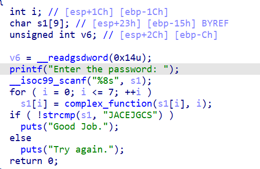
要想得到这个正确的password，通常我们的思路就是对complex_function进行一个常规的逆向。但是学习了angr之后并不需要这么做，complex_function可以使用angr自动分析。如下
1 2 3 4 5 6 7 8 9 10 11 12 13 14 15 16 17 18 19 20 21 22 23 24 25 26 27 import angrimport sysdef main (argv) : path_to_binary = r'00_angr_find' project = angr.Project(path_to_binary) initial_state = project.factory.entry_state() simulation = project.factory.simgr(initial_state) print_good_address = 0x804867D simulation.explore(find=print_good_address) if simulation.found: solution_state = simulation.found[0 ] print(solution_state.posix.dumps(sys.stdin.fileno())) else : raise Exception('Could not find the solution' ) if __name__ == '__main__' : main(sys.argv)
框架很简单，angr分析程序大致流程也就这样。
01_angr_avoid 介绍了不想进入的分支的angr设置。如题
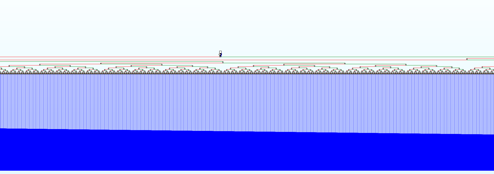
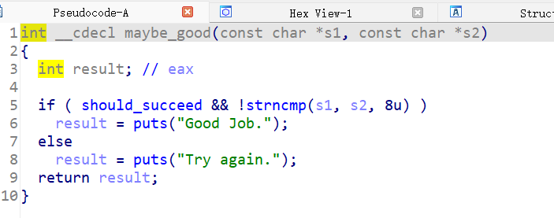
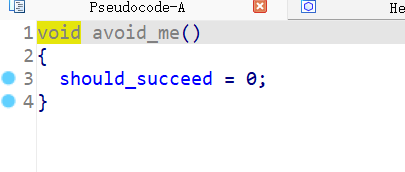
本题main函数分支十分庞大，同时要想正确的输出”Good Job.”不能进去一次avoid_me函数。因此需要在angr中设置不想进入的地方。如果设置该字段，如果模拟器分析到该地方则会跳过该次分析，进行下一次分析。
1 2 3 4 5 6 7 8 9 10 11 12 13 14 15 16 17 18 19 20 import angrimport sysdef main (argv) : path_to_binary = r"01_angr_avoid" project = angr.Project(path_to_binary) initial_state = project.factory.entry_state() simulation = project.factory.simgr(initial_state) print_good_address = 0x80485E5 will_not_succeed_address = 0x80485A8 simulation.explore(find=print_good_address, avoid=will_not_succeed_address) if simulation.found: solution_state = simulation.found[0 ] print(solution_state.posix.dumps(sys.stdin.fileno())) else : raise Exception('Could not find the solution' ) if __name__ == '__main__' : main(sys.argv)
02_angr_find_condition 本题介绍了不知道正确地址的程序该如何使用。如果本题不知道打印”Good Job.”的地址，那么该怎么办？
本题介绍了simulation.explore(find=True,avoid=False). find和avoid参数不仅仅可以是函数地址，还可以是Boolean。当find=True时，证明本次分析成功。avoid=True时，则跳过该次分析，进入下一次分析。
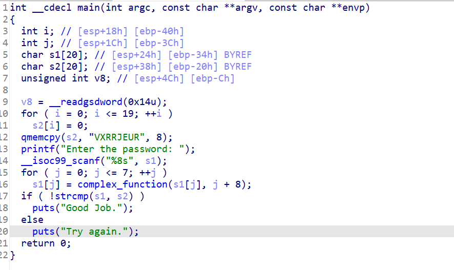
此时我们只需要判断什么时候给find为True,什么时候给avoid为True.如下
1 2 3 4 5 6 7 8 9 10 11 12 13 14 15 16 17 18 19 20 21 22 23 24 25 26 27 28 29 30 import angrimport sysdef main (argv) : path_to_binary = argv[1 ] project = angr.Project(path_to_binary) initial_state = project.factory.entry_state() simulation = project.factory.simgr(initial_state) def is_successful (state) : stdout_output = state.posix.dumps(sys.stdout.fileno()) return b'Good Job.' in stdout_output def should_abort (state) : stdout_output = state.posix.dumps(sys.stdout.fileno()) return b"Try again." in stdout_output simulation.explore(find=is_successful, avoid=should_abort) if simulation.found: solution_state = simulation.found[0 ] print(solution_state.posix.dumps(sys.stdin.fileno())) else : raise Exception('Could not find the solution' ) if __name__ == '__main__' : main(sys.argv)
小总结01 如上三个题都是针对 simulation.explore()函数。想要找到的地址就设置给find或者想要得到的输出得到之后就给find设置为True.想要避免的函数地址就设置给avoid或者不想得到的输出得到之后给avoid设置为True.
03_angr_symbolic_registers 前三题都是只用一次输入一个字符串，本题引入一次输入多个输入变量。angr简单的处理不了一次输入多个变量输入，只能简单处理单个变量。因此这里介绍angr处理多个变量.
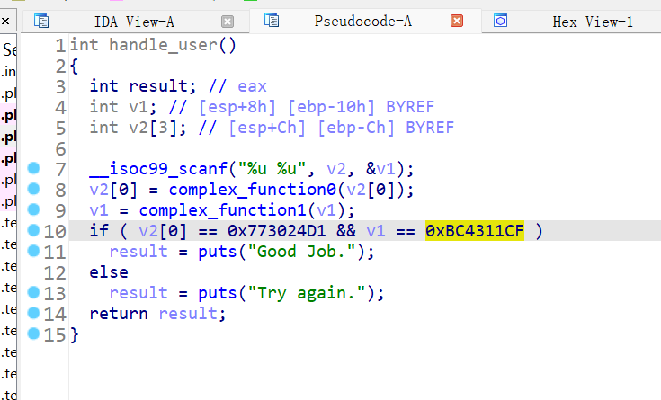
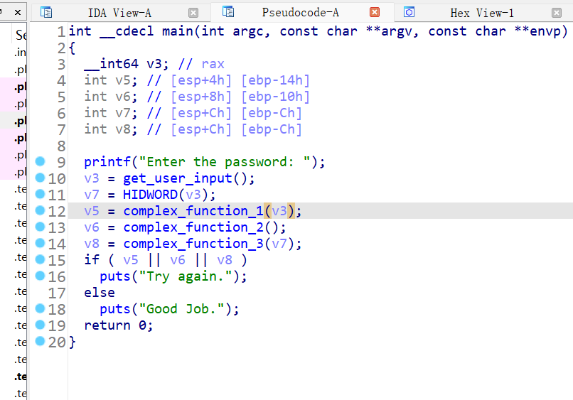
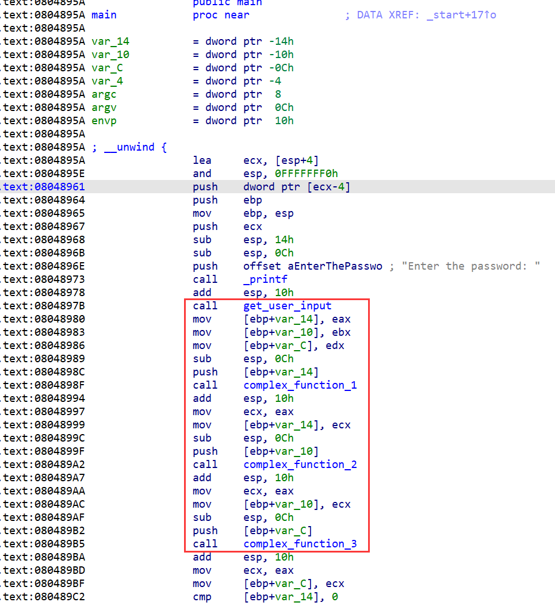
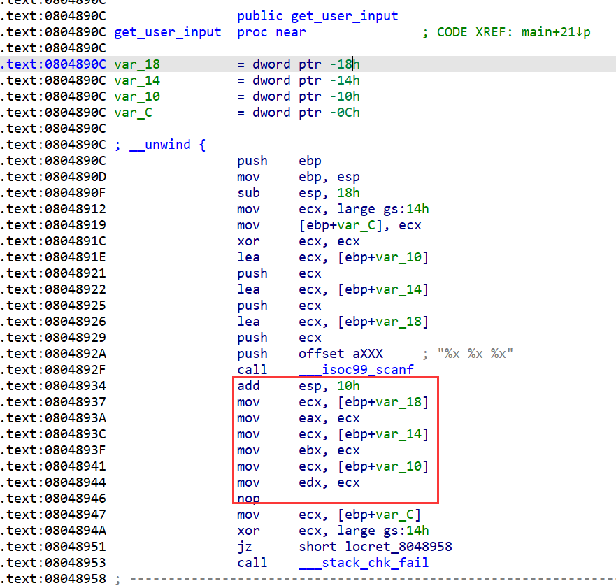
如题本题在get_user_input函数中需要输入三个数据，输入的数据存放在eax,ebx,edx中。三个参数进入三个不同的complex_function。angr的处理方式如下。
1 2 3 4 5 6 7 8 9 10 11 12 13 14 15 16 17 18 19 20 21 22 23 24 25 26 27 28 29 30 31 32 33 34 35 36 37 38 39 40 41 42 43 44 45 46 47 48 49 50 51 52 import angrimport claripyimport sysdef main (argv) : path_to_binary = argv[1 ] project = angr.Project(path_to_binary) start_address = 0x8048980 initial_state = project.factory.blank_state(addr=start_address) password0_size_in_bits = 32 password0 = claripy.BVS('password0' , password0_size_in_bits) password1_size_in_bits = 32 password1 = claripy.BVS('password1' , password1_size_in_bits) password2_size_in_bits = 32 password2 = claripy.BVS('password2' , password2_size_in_bits) initial_state.regs.eax = password0 initial_state.regs.ebx = password1 initial_state.regs.edx = password2 simulation = project.factory.simgr(initial_state) def is_successful (state) : stdout_output = state.posix.dumps(sys.stdout.fileno()) return b'Good Job.' in stdout_output def should_abort (state) : stdout_output = state.posix.dumps(sys.stdout.fileno()) return b"Try again." in stdout_output simulation.explore(find=is_successful, avoid=should_abort) if simulation.found: solution_state = simulation.found[0 ] solution0 = solution_state.se.eval(password0) solution1 = solution_state.se.eval(password1) solution2 = solution_state.se.eval(password2) solution = r"%x %x %x" %(solution0,solution1,solution2) print(solution) else : raise Exception('Could not find the solution' ) if __name__ == '__main__' : main(sys.argv)
04_angr_symbolic_stack 本题和上题类似，但是这次输入的变量是存放在栈上。
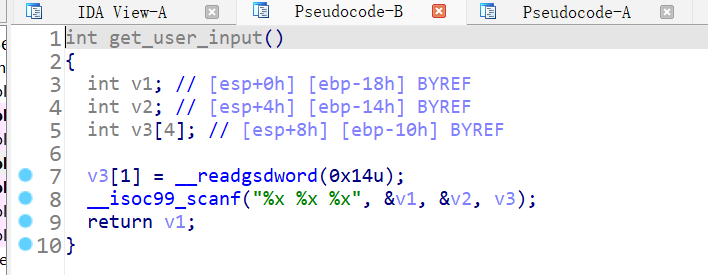
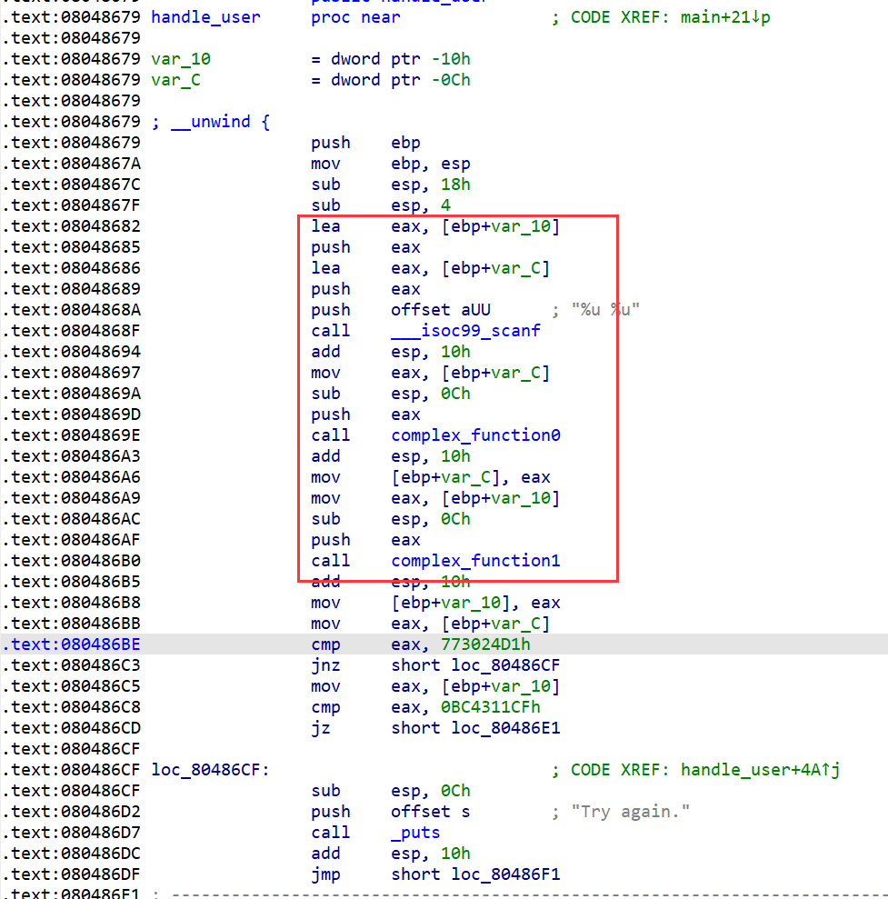
可以从汇编上看到，通过scanf输入的两个变量一个存放在距离栈底0xc的地方，一个存放在距离占地0x10的地方。angr处理如下
1 2 3 4 5 6 7 8 9 10 11 12 13 14 15 16 17 18 19 20 21 22 23 24 25 26 27 28 29 30 31 32 33 34 35 36 37 38 39 40 41 42 43 44 45 46 47 48 49 50 51 52 53 import angrimport claripyimport sysdef main (argv) : path_to_binary = argv[1 ] project = angr.Project(path_to_binary) start_address = 0x8048697 initial_state = project.factory.blank_state(addr=start_address) initial_state.regs.ebp = initial_state.regs.esp password0 = claripy.BVS('password0' , 32 ) password1 = claripy.BVS('password1' , 32 ) padding_length_in_bytes = 0x8 initial_state.regs.esp -= padding_length_in_bytes initial_state.stack_push(password0) initial_state.stack_push(password1) simulation = project.factory.simgr(initial_state) def is_successful (state) : stdout_output = state.posix.dumps(sys.stdout.fileno()) return b'Good Job.' in stdout_output def should_abort (state) : stdout_output = state.posix.dumps(sys.stdout.fileno()) return b"Try again." in stdout_output simulation.explore(find=is_successful, avoid=should_abort) if simulation.found: solution_state = simulation.found[0 ] solution0 = solution_state.se.eval(password0) solution1 = solution_state.se.eval(password1) solution = r"%u %u" %(solution0,solution1) print(solution) else : raise Exception('Could not find the solution' ) if __name__ == '__main__' : main(sys.argv)
本题关键就是要定位好原程序存放输入的变量与我们构造的位向量在栈上的位置保持一致，以便模拟器正确的计算出来正确的输入值。
05_angr_symbolic_memory 本题的存放输入的变量存放在bss段上
本题较为简单，只需要找到变量输入地址即可。存放在bss段，则地址固定，angr处理如下。
1 2 3 4 5 6 7 8 9 10 11 12 13 14 15 16 17 18 19 20 21 22 23 24 25 26 27 28 29 30 31 32 33 34 35 36 37 38 39 40 41 42 43 44 45 46 47 48 49 50 51 52 53 54 import angrimport claripyimport sysdef main (argv) : path_to_binary = argv[1 ] project = angr.Project(path_to_binary) start_address = 0x8048601 initial_state = project.factory.blank_state(addr=start_address) password0 = claripy.BVS('password0' , 64 ) password1 = claripy.BVS('password1' , 64 ) password2 = claripy.BVS('password2' , 64 ) password3 = claripy.BVS('password3' , 64 ) password0_address = 0xA1BA1C0 initial_state.memory.store(password0_address, password0) password1_address = 0xA1BA1C8 initial_state.memory.store(password1_address, password1) password2_address = 0xA1BA1D0 initial_state.memory.store(password2_address, password2) password3_address = 0xA1BA1D8 initial_state.memory.store(password3_address, password3) simulation = project.factory.simgr(initial_state) def is_successful (state) : stdout_output = state.posix.dumps(sys.stdout.fileno()) return b"Good Job." in stdout_output def should_abort (state) : stdout_output = state.posix.dumps(sys.stdout.fileno()) return b"Try again." in stdout_output simulation.explore(find=is_successful, avoid=should_abort) if simulation.found: solution_state = simulation.found[0 ] solution0 = solution_state.solver.eval(password0,cast_to=bytes).decode('utf-8' ) solution1 = solution_state.solver.eval(password1,cast_to=bytes).decode('utf-8' ) solution2 = solution_state.solver.eval(password2,cast_to=bytes).decode('utf-8' ) solution3 = solution_state.solver.eval(password3,cast_to=bytes).decode('utf-8' ) solution = r"%8s %8s %8s %8s" %(solution0,solution1,solution2,solution3) print(solution) else : raise Exception('Could not find the solution' ) if __name__ == '__main__' : main(sys.argv)
06_angr_symbolic_dynamic_memory 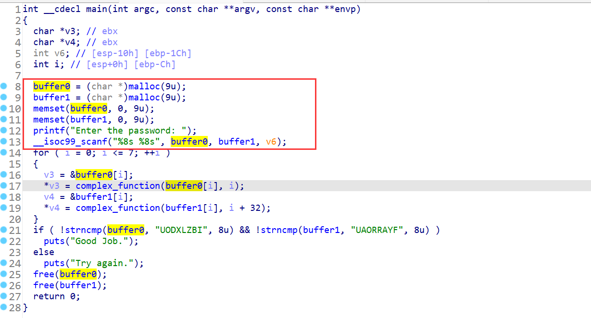
两个输入变量在堆上，地址随机。angr需要使用任意一个无用已知的内存块并且用这内存块地址覆盖指向原来数据内存的指针，这样就无需知道malloc分配的随机地址了。
1 2 3 4 5 6 7 8 9 10 11 12 13 14 15 16 17 18 19 20 21 22 23 24 25 26 27 28 29 30 31 32 33 34 35 36 37 38 39 40 41 42 43 44 45 46 47 48 49 50 import angrimport claripyimport sysdef main (argv) : path_to_binary = argv[1 ] project = angr.Project(path_to_binary) start_address = 0x8048699 initial_state = project.factory.blank_state(addr=start_address) password0 = claripy.BVS('password0' , 64 ) password1 = claripy.BVS('password1' , 64 ) fake_heap_address0 = 0xABCC760 pointer_to_malloc_memory_address0 = 0xABCC8A4 initial_state.memory.store(pointer_to_malloc_memory_address0, fake_heap_address0, endness=project.arch.memory_endness) fake_heap_address1 = 0xABCC780 pointer_to_malloc_memory_address1 = 0x0ABCC8AC initial_state.memory.store(pointer_to_malloc_memory_address1, fake_heap_address1, endness=project.arch.memory_endness) initial_state.memory.store(fake_heap_address0, password0) initial_state.memory.store(fake_heap_address1, password1) simulation = project.factory.simgr(initial_state) def is_successful (state) : stdout_output = state.posix.dumps(sys.stdout.fileno()) return b"Good Job." in stdout_output def should_abort (state) : stdout_output = state.posix.dumps(sys.stdout.fileno()) return b"Try again." in stdout_output simulation.explore(find=is_successful, avoid=should_abort) if simulation.found: solution_state = simulation.found[0 ] solution0 = solution_state.se.eval(password0,cast_to=bytes).decode('utf-8' ) solution1 = solution_state.se.eval(password1,cast_to=bytes).decode('utf-8' ) solution = r"%8s %8s" %(solution0,solution1) print(solution) else : raise Exception('Could not find the solution' ) if __name__ == '__main__' : main(sys.argv)
07_angr_symbolic_file 本题是通过从文件获取信息来读取password。原作者为了维持所有程序的一致性，因此在终端写入需要输入password。这个password在ignore_me的函数中将password写入了文件。正如作者所说，不用理会这个函数。我们就只需要当作程序是从文件中获取输入即可。
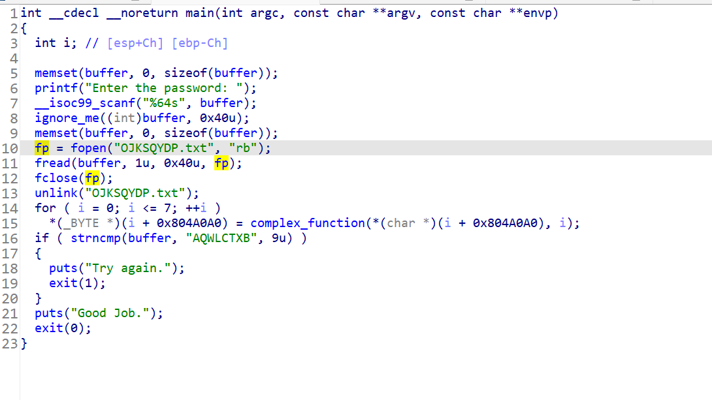
本题处理手法众多，可以用上述的05题的办法来弄出password。为了学习如何处理文件，这里只用符号化的手法来处理文件。
1 2 3 4 5 6 7 8 9 10 11 12 13 14 15 16 17 18 19 20 21 22 23 24 25 26 27 28 29 30 31 32 33 34 35 36 37 38 39 40 41 42 43 44 45 import angrimport claripyimport sysdef main (argv) : path_to_binary = argv[1 ] project = angr.Project(path_to_binary) start_address = 0x080488ED initial_state = project.factory.blank_state(addr=start_address) filename = r'OJKSQYDP.txt' symbolic_file_size_bytes = 8 password = claripy.BVS('password' , symbolic_file_size_bytes * 8 ) password_file = angr.storage.SimFile(filename, content=password) initial_state.fs.insert(filename,password_file) simulation = project.factory.simgr(initial_state) def is_successful (state) : stdout_output = state.posix.dumps(sys.stdout.fileno()) return b"Good Job." in stdout_output def should_abort (state) : stdout_output = state.posix.dumps(sys.stdout.fileno()) return b"Try again." in stdout_output simulation.explore(find=is_successful, avoid=should_abort) if simulation.found: solution_state = simulation.found[0 ] solution = solution_state.se.eval(password,cast_to=bytes).decode("UTF-8" ) print(solution) else : raise Exception('Could not find the solution' ) if __name__ == '__main__' : main(sys.argv)
小总结 02 上述几个题的思路都是使我们创建的位向量与存放输入的变量的位置对应起来或者是用位向量的值代替输入值（如07题）。其实很容易联想到，位向量的改变就相当于原程序启动之后输入值的改变。angr就是在模拟程序运行，不断地改变位向量的值模拟运行到达预期结果，最后得到正确的输入值。
08_angr_constraints 本题介绍如何添加约束。
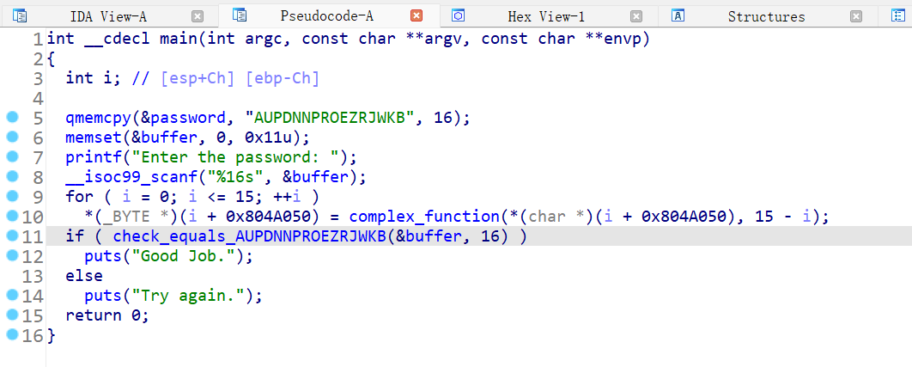
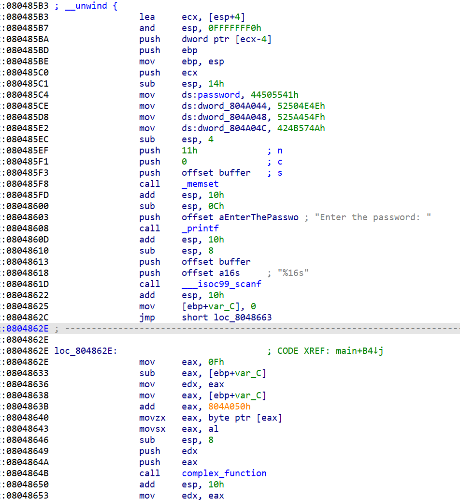
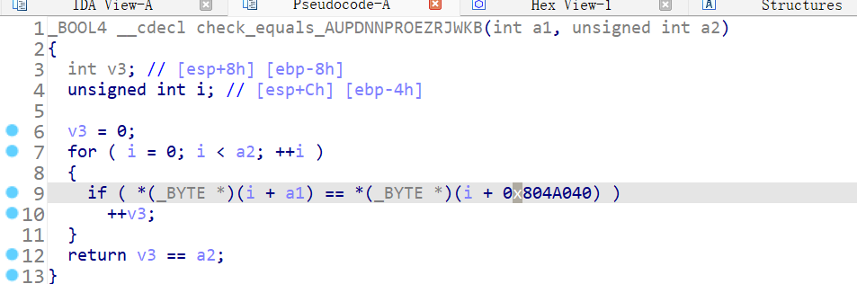
依据前面的经验，我们需要从scanf之后指定开始地址。但是本题的判断条件不像前面以字符常量的形式与我们输入的值进行比较。如果按照前面那么做，首先模拟器在模拟时，password上并没有值，给password赋值的代码在scanf前面。其次在check函数中，字符串比较时一个一个字符比较，这会产生路径爆炸。每一次循环会产生两个结果（正确或错误），这么来说会有2^16次比较结果，这样做很浪费时间。因此可以手动添加约束条件来代替这个判断函数。
1 2 3 4 5 6 7 8 9 10 11 12 13 14 15 16 17 18 19 20 21 22 23 24 25 26 27 28 29 30 31 32 33 34 35 36 37 38 39 40 41 42 43 44 import angrimport claripyimport sysdef main (argv) : path_to_binary = argv[1 ] project = angr.Project(path_to_binary) start_address = 0x8048625 initial_state = project.factory.blank_state(addr=start_address) password = claripy.BVS('password' , 16 *8 ) password_address = 0x804A050 initial_state.memory.store(password_address, password) simulation = project.factory.simgr(initial_state) address_to_check_constraint = 0x8048673 simulation.explore(find=address_to_check_constraint) if simulation.found: solution_state = simulation.found[0 ] constrained_parameter_address = 0x804A050 constrained_parameter_size_bytes = 16 constrained_parameter_bitvector = solution_state.memory.load( constrained_parameter_address, constrained_parameter_size_bytes ) constrained_parameter_desired_value = r"AUPDNNPROEZRJWKB" solution_state.add_constraints(constrained_parameter_bitvector == constrained_parameter_desired_value) solution = solution_state.solver.eval(password,cast_to=bytes).decode("UTF-8" ) print(solution) else : raise Exception('Could not find the solution' ) if __name__ == '__main__' : main(sys.argv)
09_angr_hooks 本题介绍了Angr的hooks方式，将跳过的函数替换为自己的函数
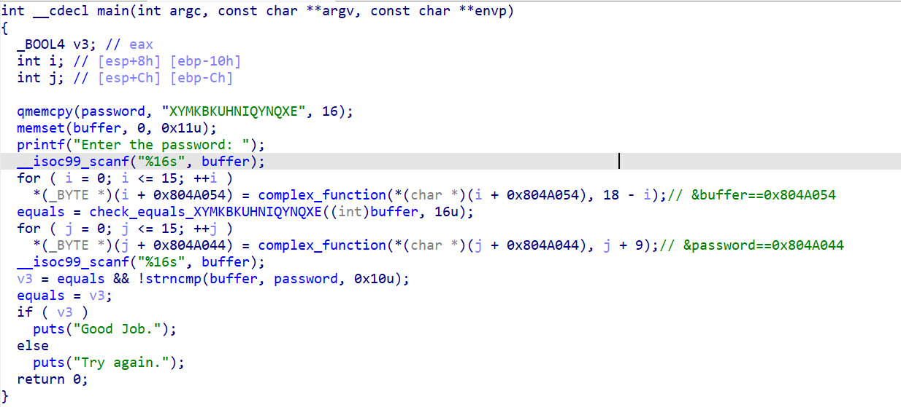
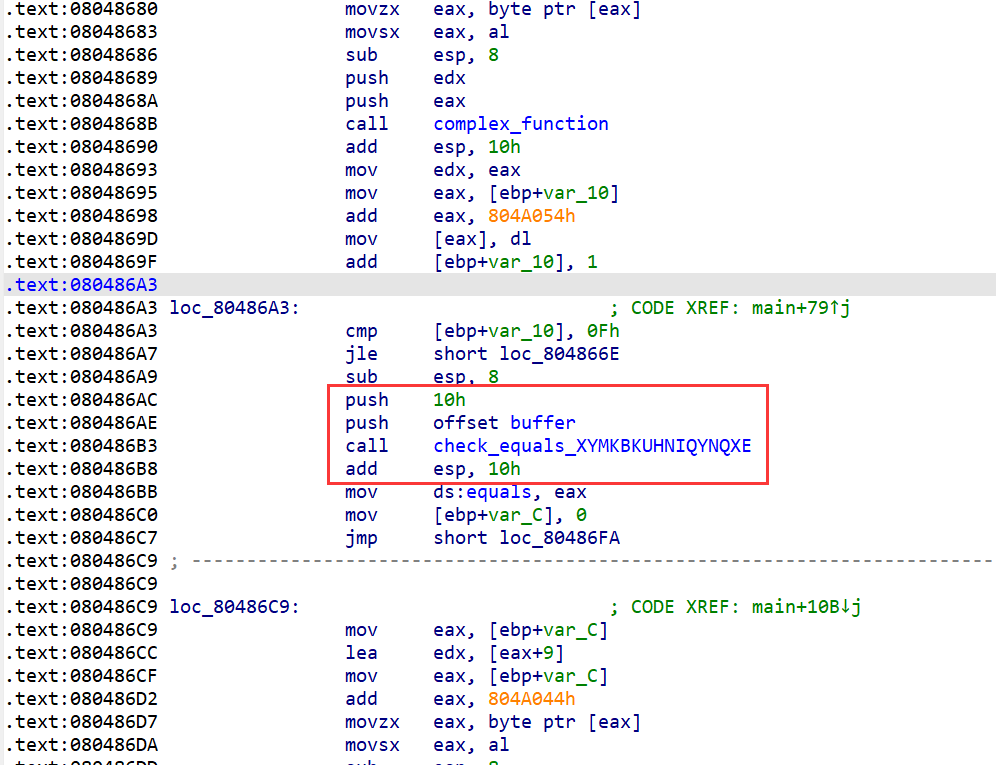
如题，获取一段输入之后加密进入check_equals函数并将比较结果保存。然后再获取一段输入之后和加密之后的password直接比较。
依据上一题的经验，进入check_equals函数会造成路径爆炸。因此我们需要跳过它，上述红框的地方就是我们需要跳过的地方。后面的代码功能我们完全可以依靠angr完成。
1 2 3 4 5 6 7 8 9 10 11 12 13 14 15 16 17 18 19 20 21 22 23 24 25 26 27 28 29 30 31 32 33 34 35 36 37 38 39 40 41 42 43 44 45 46 47 48 49 50 51 import angrimport claripyimport sysdef main (argv) : path_to_binary = argv[1 ] project = angr.Project(path_to_binary) initial_state = project.factory.entry_state() check_equals_called_address = 0x80486A9 instruction_to_skip_length = 18 @project.hook(check_equals_called_address, length=instruction_to_skip_length) def skip_check_equals_ (state) : user_input_buffer_address = 0x804A054 user_input_buffer_length = 16 user_input_string = state.memory.load( user_input_buffer_address, user_input_buffer_length) check_against_string = r'XYMKBKUHNIQYNQXE' state.regs.eax = claripy.If( user_input_string == check_against_string, claripy.BVV(1 , 32 ), claripy.BVV(0 , 32 )) simulation = project.factory.simgr(initial_state) def is_successful (state) : stdout_output = state.posix.dumps(sys.stdout.fileno()) return b"Good Job." in stdout_output def should_abort (state) : stdout_output = state.posix.dumps(sys.stdout.fileno()) return b"Try again." in stdout_output simulation.explore(find=is_successful, avoid=should_abort) if simulation.found: solution_state = simulation.found[0 ] solution = solution_state.posix.dumps(sys.stdin.fileno()) print(solution) else : raise Exception('Could not find the solution' ) if __name__ == '__main__' : main(sys.argv)
10_angr_simprocedures 本题介绍了一个类似hook的方式。试想在上一题中，check_equals函数被多次调用，我们不能在每次调用的地方进行hook,这样肯定使不合理的而且也无聊。因此angr提供了一个simprocedures的功能，可以用来hook一个函数。我们可以将check_equals函数给hook为我们自己的函数。
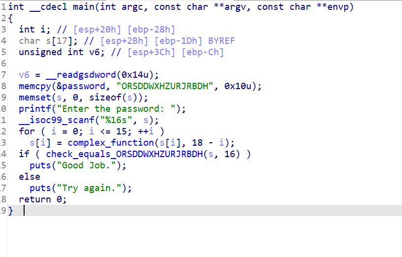
如题我们只需要将check_equals_ORSDDWXHZURJRBDH函数hook为我们自己处理函数即可。angr操作如下
1 2 3 4 5 6 7 8 9 10 11 12 13 14 15 16 17 18 19 20 21 22 23 24 25 26 27 28 29 30 31 32 33 34 35 36 37 38 39 40 41 42 43 44 45 46 47 48 49 import angrimport claripyimport sysdef main (argv) : path_to_binary = argv[1 ] project = angr.Project(path_to_binary) initial_state = project.factory.entry_state() class ReplacementCheckEquals (angr.SimProcedure) : def run (self, to_check, length) : user_input_buffer_address = to_check user_input_buffer_length = length user_input_string = self.state.memory.load( user_input_buffer_address, user_input_buffer_length) check_against_string = r"ORSDDWXHZURJRBDH" return claripy.If(check_against_string==user_input_string, claripy.BVV(1 ,32 ), claripy.BVV(0 ,32 )) check_equals_symbol = r"check_equals_ORSDDWXHZURJRBDH" project.hook_symbol(check_equals_symbol, ReplacementCheckEquals()) simulation = project.factory.simgr(initial_state) def is_successful (state) : stdout_output = state.posix.dumps(sys.stdout.fileno()) return b"Good Job." in stdout_output def should_abort (state) : stdout_output = state.posix.dumps(sys.stdout.fileno()) return b"Try again." in stdout_output simulation.explore(find=is_successful, avoid=should_abort) if simulation.found: solution_state = simulation.found[0 ] solution = solution_state.posix.dumps(sys.stdin.fileno()) print(solution) else : raise Exception('Could not find the solution' ) if __name__ == '__main__' : main(sys.argv)
11_angr_sim_scanf 本题介绍如何hook掉scanf函数。同时介绍了如何在hook函数内部将位向量传递出来。
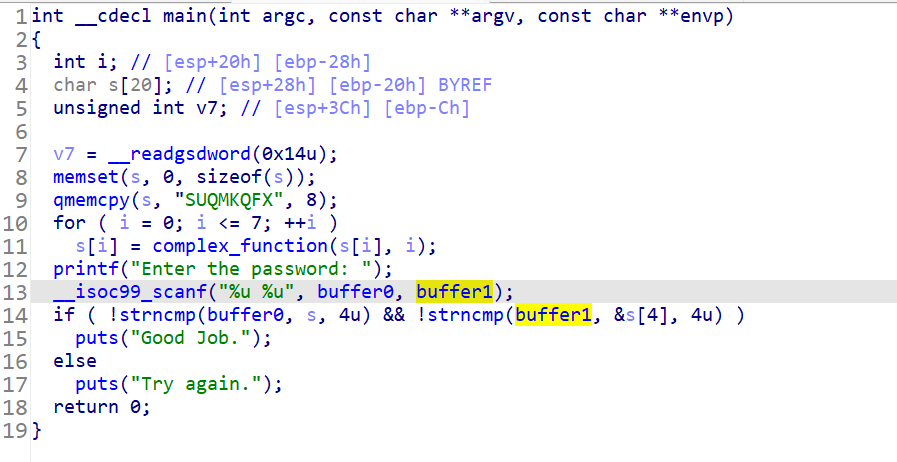
1 2 3 4 5 6 7 8 9 10 11 12 13 14 15 16 17 18 19 20 21 22 23 24 25 26 27 28 29 30 31 32 33 34 35 36 37 38 39 40 41 42 43 44 45 46 47 48 49 import angrimport claripyimport sysdef main (argv) : path_to_binary = argv[1 ] project = angr.Project(path_to_binary) initial_state = project.factory.entry_state() class ReplacementScanf (angr.SimProcedure) : def run (self, format_string, scanf0_address, scanf1_address) : scanf0 = claripy.BVS('scanf0' , 4 *8 ) scanf1 = claripy.BVS('scanf1' , 4 *8 ) self.state.memory.store(scanf0_address, scanf0, endness=project.arch.memory_endness) self.state.memory.store(scanf1_address, scanf1, endness=project.arch.memory_endness) self.state.globals['solution0' ] = scanf0 self.state.globals['solution1' ] = scanf1 scanf_symbol = r"__isoc99_scanf" project.hook_symbol(scanf_symbol, ReplacementScanf()) simulation = project.factory.simgr(initial_state) def is_successful (state) : stdout_output = state.posix.dumps(sys.stdout.fileno()) return b"Good Job." in stdout_output def should_abort (state) : stdout_output = state.posix.dumps(sys.stdout.fileno()) return b"Try again." in stdout_output simulation.explore(find=is_successful, avoid=should_abort) if simulation.found: solution_state = simulation.found[0 ] stored_solutions0 = solution_state.globals['solution0' ] stored_solutions1 = solution_state.globals['solution1' ] solution =r"%u %u" %(solution_state.solver.eval(stored_solutions0),solution_state.solver.eval(stored_solutions1)) print(solution) else : raise Exception('Could not find the solution' ) if __name__ == '__main__' : main(sys.argv)
12_angr_veritesting angr有两种路径生成方式，动态符号执行(DSE)和静态符号执行(SSE)。前者为路径生成公式，在生成公式时会产生很高的负载，但是公式很容易解。后者为语句生成公式，公式能覆盖很多路径，但是公式难解。SSE不能针对大规模程序分析。Veritesting结合了DSE和SSE，减少了路径爆炸的影响，因此在生成模拟器的时候将Veritesting设置为True即可。
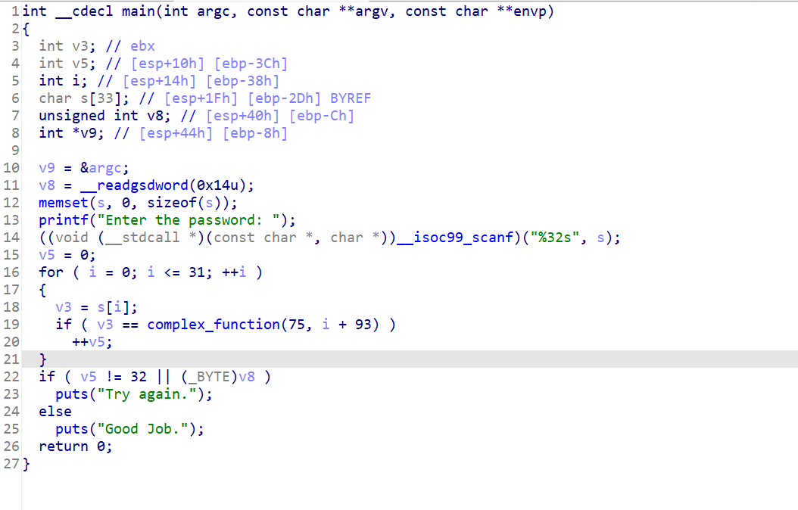
可以看到本题，无法避免路径爆炸。比较字符时，使用输入字符串与生成的字符串一一比较。如果不设置veritesting，则会导致路径爆炸的情况出现。
1 2 3 4 5 6 7 8 9 10 11 12 13 14 15 16 17 18 19 20 21 22 23 24 25 26 27 28 29 30 import angrimport claripyimport sysdef main (argv) : path_to_binary=argv[1 ] project=angr.Project(path_to_binary) initial_state=project.factory.entry_state() simulation = project.factory.simgr(initial_state,veritesting=True ) def is_successful (state) : stdout_output = state.posix.dumps(sys.stdout.fileno()) return b"Good Job." in stdout_output def should_abort (state) : stdout_output = state.posix.dumps(sys.stdout.fileno()) return b"Try again." in stdout_output simulation.explore(find=is_successful, avoid=should_abort) if simulation.found: solution_state = simulation.found[0 ] solution = solution_state.posix.dumps(sys.stdin.fileno()) print(solution) else : raise Exception('Could not find the solution' ) if __name__ == '__main__' : main(sys.argv)
小总结03 如上的五个题都是在避免路径爆炸或者避免一些麻烦时引入的代替原程序部分代码办法或者采取优化性能的办法，使得路径能够完整，让模拟器能够模拟出原程序运行路径。以至于方便最后找到正确路径。
13_angr_static_binary 本题处理静态编译的程序。在动态链接的程序里面，对于标准库函数的调用，angr自动的将其替换为更相应高效的simProcedure.但是在静态编译的程序里面这些函数需要我们手动替换。替换时，我们只需要将需要用到的函数替换即可，大可不必全部替换。
1 2 3 4 5 6 7 8 9 10 11 12 13 14 15 16 17 18 19 20 21 22 23 24 25 26 27 28 29 30 31 32 33 34 35 36 37 38 39 40 41 import angrimport claripyimport sysdef main (argv) : path_to_binary=argv[1 ] project=angr.Project(path_to_binary) initial_state=project.factory.entry_state() __libc_start_main_address=0x8048D10 printf_address=0x804ED40 _isoc99_scanf_address=0x804ED80 strcmp_address=0x805B450 puts_address=0x804F350 project.hook(__libc_start_main_address,angr.SIM_PROCEDURES['glibc' ]['__libc_start_main' ]()) project.hook(printf_address, angr.SIM_PROCEDURES['libc' ]['printf' ]()) project.hook(_isoc99_scanf_address, angr.SIM_PROCEDURES['libc' ]['scanf' ]()) project.hook(strcmp_address, angr.SIM_PROCEDURES['libc' ]['strcmp' ]()) project.hook(puts_address, angr.SIM_PROCEDURES['libc' ]['puts' ]()) simulation = project.factory.simgr(initial_state,veritesting=True ) def is_successful (state) : stdout_output = state.posix.dumps(sys.stdout.fileno()) return b"Good Job." in stdout_output def should_abort (state) : stdout_output = state.posix.dumps(sys.stdout.fileno()) return b"Try again." in stdout_output simulation.explore(find=is_successful, avoid=should_abort) if simulation.found: solution_state = simulation.found[0 ] solution = solution_state.posix.dumps(sys.stdin.fileno()) print(solution) else : raise Exception('Could not find the solution' ) if __name__ == '__main__' : main(sys.argv)
14_angr_shared_library 本题是告诉我们如何分析不是可执行程序的二进制文件。比如典型的动态链接库。本题关键函数是在lib14_angr_shared_library.so中。14_angr_shared_library调用so文件中的validate函数，成功就返回True,否则就是False.
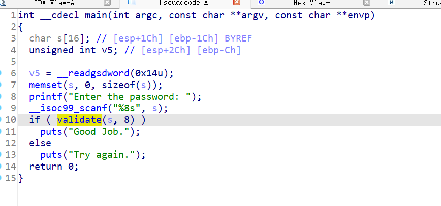
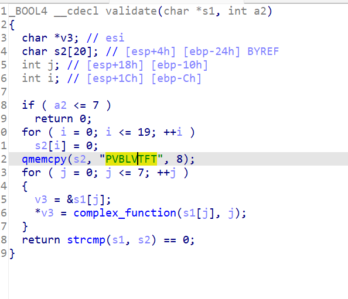
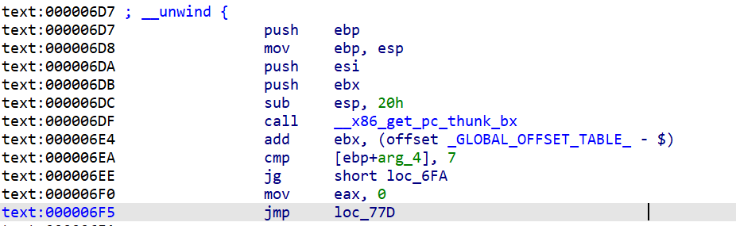
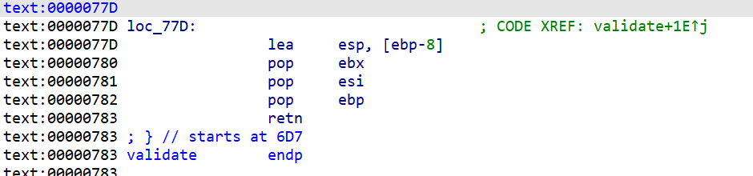
关键验证代码都在so文件中，因此本题需要angr加载so文件进行分析。
1 2 3 4 5 6 7 8 9 10 11 12 13 14 15 16 17 18 19 20 21 22 23 24 25 26 27 28 29 30 31 32 33 34 35 36 37 38 39 40 41 42 43 44 45 import angrimport claripyimport sysdef main (argv) : path_to_binary =argv[1 ] base = 0x4000000 project = angr.Project(path_to_binary, load_options={ 'main_opts' : { 'base_addr' : base } }) password_pointer=claripy.BVV(0x3000000 ,32 ) validate_function_address = base+0x6D7 initial_state = project.factory.call_state( validate_function_address, password_pointer, 8 ) password=claripy.BVS('password' ,8 *8 ) initial_state.memory.store(password_pointer,password) simulation = project.factory.simgr(initial_state) success_address = base+0x783 simulation.explore(find=success_address) if simulation.found: solution_state = simulation.found[0 ] solution_state.add_constraints(solution_state.regs.eax != 0 ) solution = solution_state.solver.eval(password,cast_to=bytes).decode() print(solution) else : raise Exception('Could not find the solution' ) if __name__ == '__main__' : main(sys.argv)
15_angr_arbitrary_read 本题咋一看不知道说的是什么。题目本身也比较简单，根据题目命猜测想要任意地址读。
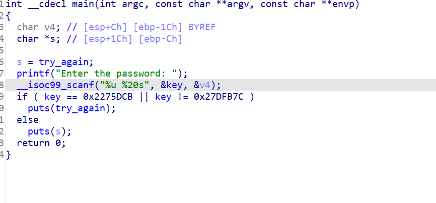
分析本题，其实可以通过V4的栈溢出控制s，控制s的值就可以实现任意地址读了。这个是在pwn里面一眼就看出来的东西。我就一直不明白在angr中有什么用。然后我就仔细研究代码，发现angr并不需要你懂栈溢出的原理。根据题目规定的值写好变量，然后设置好想要的预期效果，angr自动帮你生成payload，前提是题目本身就有漏洞存在。同时还可以对payload进行一些规定，比如需要写入的都是可见字符。
1 2 3 4 5 6 7 8 9 10 11 12 13 14 15 16 17 18 19 20 21 22 23 24 25 26 27 28 29 30 31 32 33 34 35 36 37 38 39 40 41 42 43 44 45 46 47 48 49 50 51 52 53 54 55 56 57 58 59 60 61 62 63 64 65 66 67 68 69 70 71 72 73 74 import angrimport claripyimport sysdef main (argv) : path_to_binary = argv[1 ] project = angr.Project(path_to_binary) initial_state =project.factory.entry_state() class ReplacementScanf (angr.SimProcedure) : def run (self, format_string, key , password) : scanf0 = claripy.BVS('scanf0' , 32 ) scanf1 = claripy.BVS('scanf1' , 20 *8 ) for char in scanf1.chop(bits=8 ): self.state.add_constraints(char >= 'A' , char <= 'Z' ) scanf0_address = key self.state.memory.store(scanf0_address, scanf0, endness=project.arch.memory_endness) scanf1_address = password self.state.memory.store(scanf1_address, scanf1) self.state.globals['solution0' ] = scanf0 self.state.globals['solution1' ] = scanf1 scanf_symbol = r'__isoc99_scanf' project.hook_symbol(scanf_symbol, ReplacementScanf()) def check_puts (state) : puts_parameter = state.memory.load(state.regs.esp+0x4 , 4 , endness=project.arch.memory_endness) if state.se.symbolic(puts_parameter): good_job_string_address = 0x484F4A47 is_vulnerable_expression = good_job_string_address==puts_parameter copied_state = state.copy() copied_state.add_constraints(is_vulnerable_expression) if copied_state.satisfiable(): state.add_constraints(is_vulnerable_expression) return True else : return False else : return False simulation = project.factory.simgr(initial_state) def is_successful (state) : puts_address = 0x8048370 if state.addr == puts_address: return check_puts(state) else : return False simulation.explore(find=is_successful) if simulation.found: solution_state = simulation.found[0 ] solution0=solution_state.globals["solution0" ] solution1=solution_state.globals["solution1" ] solution = r'%u %20s' %(solution_state.solver.eval(solution0),solution_state.solver.eval(solution1,cast_to=bytes).decode("UTF-8" )) print(solution) else : raise Exception('Could not find the solution' ) if __name__ == '__main__' : main(sys.argv)
16_angr_arbitrary_write 使用angr生成对存在漏洞的程序进行任意地址写的payload。
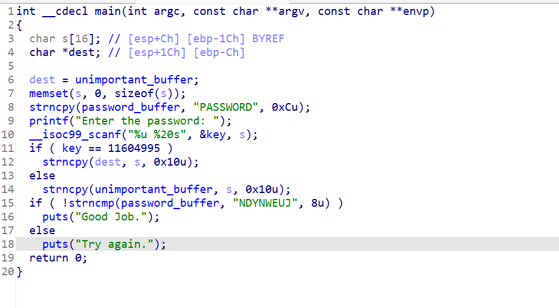
如题，本题不加任何漏洞利用，则永远不可能打印出”Good Job.” 因此需要使用angr自动生成一串payload，将password_buffer指向的内存改为”NDYNWEUJ”
1 2 3 4 5 6 7 8 9 10 11 12 13 14 15 16 17 18 19 20 21 22 23 24 25 26 27 28 29 30 31 32 33 34 35 36 37 38 39 40 41 42 43 44 45 46 47 48 49 50 51 52 53 54 55 56 57 58 59 60 61 62 63 64 65 66 67 68 69 70 71 72 73 74 import angrimport claripyimport sysdef main (argv) : path_to_binary = argv[1 ] project = angr.Project(path_to_binary) initial_state = project.factory.entry_state() class ReplacementScanf (angr.SimProcedure) : def run (self, format_string,key , password) : scanf0 = claripy.BVS('scanf0' , 32 ) scanf1 = claripy.BVS('scanf1' , 20 *8 ) for char in scanf1.chop(bits=8 ): self.state.add_constraints(char >= 'A' , char <= 'Z' ) scanf0_address = key self.state.memory.store(scanf0_address, scanf0, endness=project.arch.memory_endness) scanf1_address = password self.state.memory.store(scanf1_address, scanf1) self.state.globals['solution0' ] = scanf0 self.state.globals['solution1' ] = scanf1 scanf_symbol = r'__isoc99_scanf' project.hook_symbol(scanf_symbol, ReplacementScanf()) def check_strncpy (state) : strncpy_dest = state.memory.load(state.regs.esp+0x4 ,4 ,endness=project.arch.memory_endness) strncpy_src = state.memory.load(state.regs.esp+0x8 ,4 ,endness=project.arch.memory_endness) strncpy_len = state.memory.load(state.regs.esp+0xc ,4 ,endness=project.arch.memory_endness) src_contents = state.memory.load(strncpy_src,strncpy_len) if state.se.symbolic(src_contents) and state.se.symbolic(strncpy_dest): password_string = r"NDYNWEUJ" buffer_address = 0x57584344 does_src_hold_password = src_contents[-1 :-64 ] == password_string does_dest_equal_buffer_address = buffer_address == strncpy_dest if state.satisfiable(extra_constraints=(does_src_hold_password, does_dest_equal_buffer_address)): state.add_constraints(does_src_hold_password, does_dest_equal_buffer_address) return True else : return False else : return False simulation = project.factory.simgr(initial_state) def is_successful (state) : strncpy_address = 0x8048410 if state.addr == strncpy_address: return check_strncpy(state) else : return False simulation.explore(find=is_successful) if simulation.found: solution_state = simulation.found[0 ] solution0=solution_state.globals["solution0" ] solution1=solution_state.globals["solution1" ] solution = r'%u %20s' %(solution_state.solver.eval(solution0),solution_state.solver.eval(solution1,cast_to=bytes).decode("UTF-8" )) print(solution) else : raise Exception('Could not find the solution' ) if __name__ == '__main__' : main(sys.argv)
17_angr_arbitrary_jump 任意地址跳转。实际上就是通过栈溢出控制返回地址。不过payload使用angr自动生成。
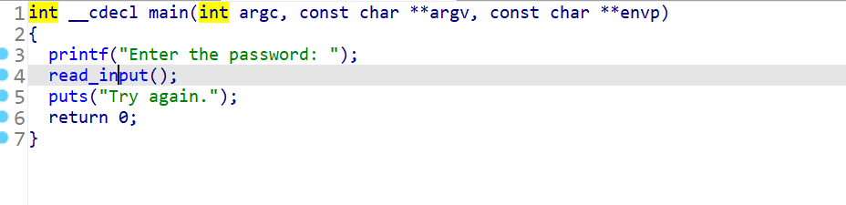
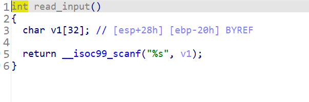
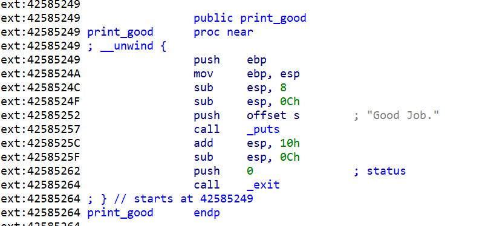
在read_input()函数中，存在栈溢出漏洞。我们需要控制函数跳转到print_good函数。
首先需要介绍一些无约束的路径。当程序进入了下一条指令可以是任何地址的时候，该条路径就属于无约束路径。一般来说这种路径是没有意义的，angr会默认抛弃掉该条路径，使该条路径变为unconstrained。本题无约束的路径正是我们需要的。当初发栈溢出之后，该路径就会变为无约束路径。
1 2 3 4 5 6 7 8 9 10 11 12 13 14 15 16 17 18 19 20 21 22 23 24 25 26 27 28 29 30 31 32 33 34 35 36 37 38 39 40 41 42 43 44 45 46 47 48 49 50 51 import angrimport claripyimport sysdef main (argv) : path_to_binary = argv[1 ] project = angr.Project(path_to_binary) input_str=claripy.BVS("payload" ,100 *8 ) initial_state = project.factory.entry_state(stdin=input_str) simulation = project.factory.simgr( initial_state, save_unconstrained=True , stashes={ 'active' : [initial_state], 'unconstrained' :[], 'found' :[], 'not_needed' :[] }) def has_found_solution () : return simulation.found def has_unconstrained () : return simulation.unconstrained def has_active () : return simulation.active while (has_active() or has_unconstrained()) and (not has_found_solution()): for unconstrained_state in simulation.unconstrained: unconstrained_state.add_constraints(unconstrained_state.regs.eip == 0x42585249 ) simulation.move('unconstrained' , 'found' ) simulation.step() if simulation.found: solution_state=simulation.found[0 ] for byte in input_str.chop(bits=8 ): solution_state.add_constraints(byte >= 'A' , byte <= 'Z' ) solution = solution_state.solver.eval(input_str,cast_to=bytes).decode() print(solution) else : raise Exception('Could not find the solution' ) if __name__ == '__main__' : main(sys.argv)
总结 至此，angr的基础学习就已经结束了。通过上述十几个例题的展示，angr其实理解起来并不困难。当我们需要一串字符来触发程序中某种东西的时候，就可以使用angr。angr并不需要跑完整个程序的代码，可以只执行一个函数（调用链接库的函数），也可以跳过一个函数去执行其他代码（hook），还可以在原程序基础上加入自己想要的代码（约束）。而且通过在angr脚本中加入的约束和程序本身的代码，angr模拟原程序运行，不断改变输入，从而改变和生成不同路径，可以自动帮我们得出到达目的的输入。